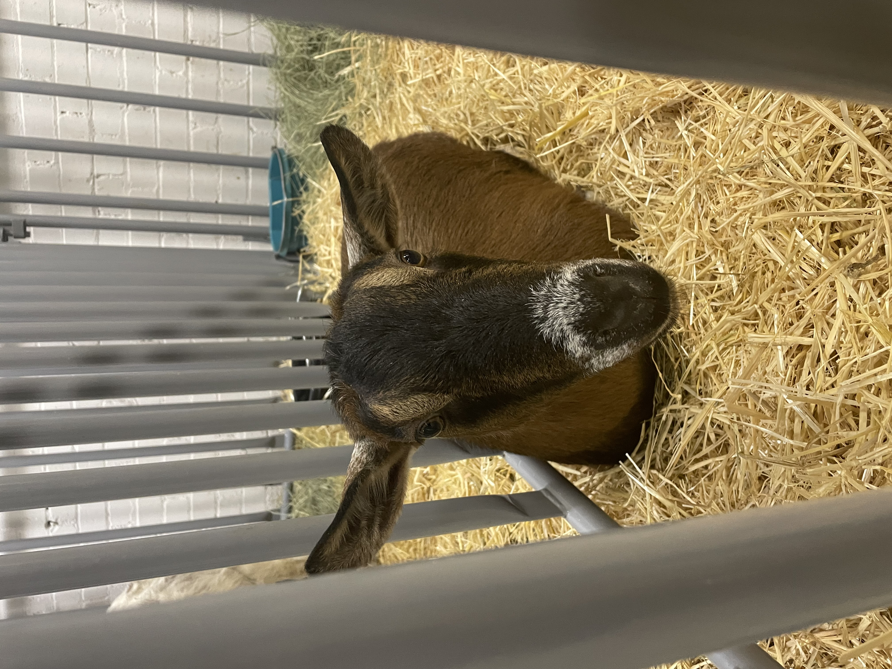

My Website
In the Style Of
TeresaJean Herleth
Some are I've made can be found on my website
Art I've Done
Helped to create "In the Style Of"
Other Art
-
Painted a coin
-
Painted some shoes
-
Painted a Whale
-
Painted some flowers
Here is a picture of a goat

Inline formula \( {J(\theta) =\frac{1}{2m} [\sum^m_{i=1}(h_\theta(x^{(i)}) - y^{(i)})2 + \lambda\sum^n_{j=1}\theta^2_j]} \). Displayed formula: \[ a^2+b^2=c^2 \